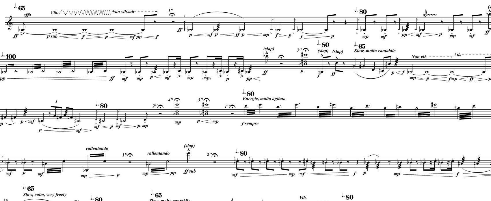
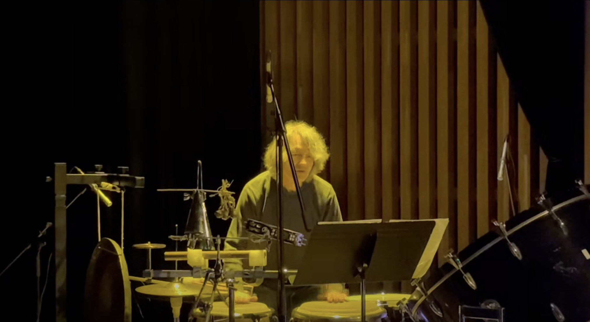
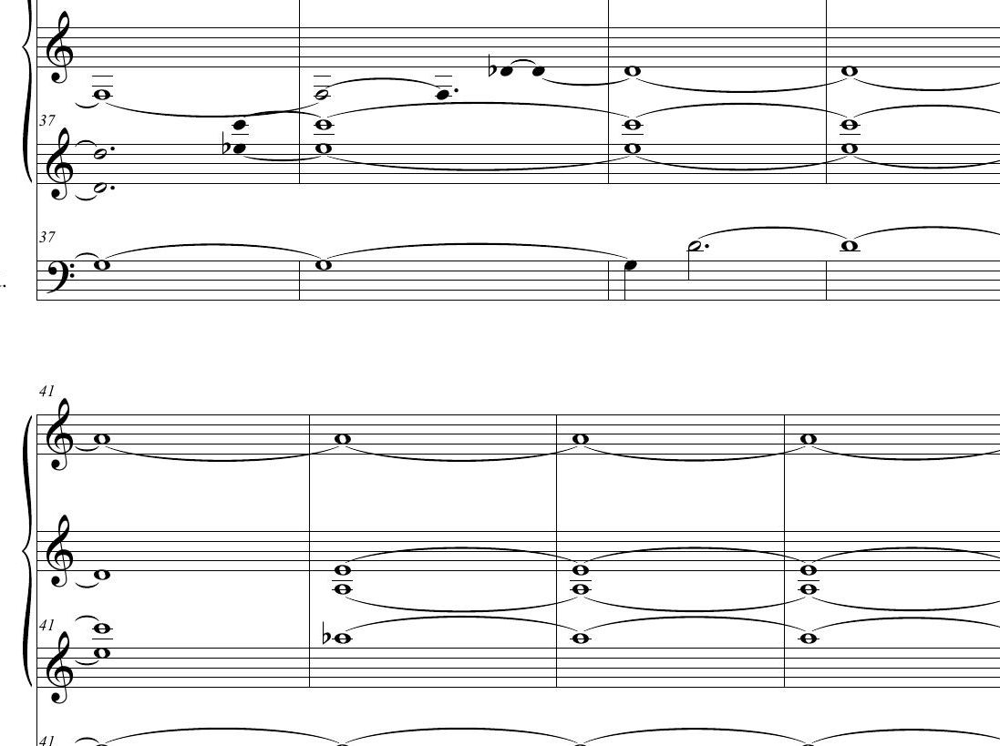
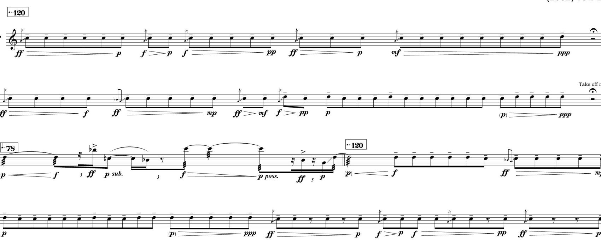

CatalogueCatálogo
Works for one performer, with and without electronicsObras para un intérprete, con y sin electrónica
Works for one performer, with and without electronics. Several are direct sonifications of a mathematical object: Pascal's triangle in Shrouded Triangularities, L systems in De Natura Organica, quantum tunnelling in Túneles.
Obras para un intérprete, con y sin electrónica. Varias son sonificaciones directas de un objeto matemático: el triángulo de Pascal en Shrouded Triangularities, los sistemas L en De Natura Organica, el efecto túnel en Túneles.
← → · Esc← → · Esc

Solo instrumentsInstrumentos solos
Percussion and live electronicsPercusión y electrónica en vivo · 2026 · 10:00
Tessellae: the small tiles of a mosaic; rhythm as tessellationTessellae: las pequeñas piezas de un mosaico; el ritmo como teselación
Small rhythmic tiles laid in time by a single performer, built on Euclidean rhythms: patterns in which events are spread as evenly as possible across a cycle. The grid is then expanded with asymmetric tuplets in threes and fives, with repetition and with silence; one or two lines sound at a time, so every gesture reads as a discrete tessera.
The live electronics use RAVE, a variational autoencoder developed at IRCAM that runs in real time, trained on percussion, which listens to the performer and reshapes the timbre in the moment. The AI does not compose: it transforms what is played, as it is played. The piece lives in the dialogue between a strict rhythmic architecture and a fluid transformation of its surface.
Percussion setup: hi hat, snare drum, bass drum, brake drum, tam tam, triangle, crotales, sleigh bells, tambourine, agogô, cowbell, wood blocks and congas. The score has eight sections, among them Colorful, Calm, Solemn, Serene, Ceremonial and Furious; the electronics advance through cues marked in the part.
Pequeñas teselas rítmicas dispuestas en el tiempo por un solo intérprete, construidas sobre ritmos euclidianos: patrones en que los eventos se reparten de la manera más pareja posible dentro de un ciclo. Esa grilla se expande luego con tresillos y quintillos asimétricos, con repetición y con silencio; suenan una o dos líneas a la vez, de modo que cada gesto se lee como una tesela discreta.
La electrónica en vivo usa RAVE, un autoencoder variacional en tiempo real desarrollado en el IRCAM y entrenado con percusión, que escucha al intérprete y remodela el timbre en el momento. La inteligencia artificial no compone: transforma lo que se toca, mientras se toca. La obra vive en el diálogo entre una arquitectura rítmica estricta y una transformación fluida de su superficie.
Instrumentación de percusión: hi hat, caja, bombo, brake drum, tam tam, triángulo, crótalos, cascabeles, pandereta, agogó, cencerro, wood blocks y congas. La partitura tiene ocho secciones, entre ellas Colorful, Calm, Solemn, Serene, Ceremonial y Furious; la electrónica avanza por cues marcados en la parte.
Solo instrumentsInstrumentos solos
Bass clarinetClarinete bajo · 2025 · 9:00
Pascal's triangle: the array of binomial coefficientsEl triángulo de Pascal: el arreglo de los coeficientes binomiales
Solo instrumentsInstrumentos solos
GuitarGuitarra sola · 2023 · 12:00
Solo instrumentsInstrumentos solos
Solo contrabassContrabajo solo · 2021 · 6:30

Solo instrumentsInstrumentos solos
OrganOrgano · 2016 · 1:10:04
L systems: recursive rewriting rules that model the growth of plantsSistemas L: reglas recursivas de reescritura que modelan el crecimiento de las plantas
De Natura Organica was written for the organist Alejandro Reyes. The title plays on two natures: the imposing nature of the organ as a versatile instrument that is relatively absent from contemporary music, and the nature of this music itself, inspired by biological and organic processes that simple computer algorithms model well.
The music was generated entirely by compositional methods based on L systems, originally proposed by the Dutch botanist Aristid Lindenmayer in 1968 as an axiomatic system for modelling growth and development in biological structures such as plants and trees. L systems work through a parallel substitution string rewriting model, in a way very similar to Chomsky grammars, and can successfully simulate morphogenesis. An L system algorithm generated the cover art of the album as well. Composers have used them since the eighties.
The work is structured in seven movements, each one created by a different variant of an L system. Movement two contains three submovements that differ mostly in instrumentation, and movement four contains two. The recording suggests a listening order, but each movement is autonomous and the whole work can be heard in any order. It was recorded on the digital organ of the Templo Mayor at Campus Oriente of the Pontificia Universidad Católica de Chile, with funding from the Dirección de Artes y Cultura UC.
De Natura Organica fue compuesta especialmente para el maestro Alejandro Reyes. El título propone un juego entre la naturaleza imponente del órgano, un instrumento de gran versatilidad y relativamente poco usado en la música contemporánea, y la naturaleza propia de esta música, inspirada en procesos biológicos y orgánicos que pueden modelarse muy bien mediante algoritmos computacionales simples.
La música fue generada íntegramente mediante métodos composicionales basados en sistemas L, propuestos originalmente por el botánico holandés Aristid Lindenmayer en 1968 como un sistema axiomático para modelar el crecimiento y desarrollo de estructuras biológicas como plantas y árboles. Los sistemas L funcionan mediante un modelo de sustitución de caracteres en paralelo, de forma similar a las gramáticas de Chomsky, y simulan la morfogénesis con éxito. La carátula del disco fue generada con este mismo tipo de algoritmos. Se usan para crear música desde los años ochenta.
La obra se estructura en siete movimientos, cada uno generado a partir de una variante distinta de sistema L. El movimiento 2 contiene tres submovimientos que difieren sobre todo en su instrumentación y el 4 contiene dos. El disco propone un orden de escucha, pero cada movimiento es autónomo y la obra puede ordenarse de cualquier manera. Fue grabada en el órgano digital del Templo Mayor del Campus Oriente de la Pontificia Universidad Católica de Chile, con financiamiento de la Dirección de Artes y Cultura UC.
Solo instrumentsInstrumentos solos
Vibraphone and computerVibráfono y computador · 2012 · 14:41
Contracción II is part of a series of works entitled Contracción (contraction), all derived from the earlier work Extensiones (2010), for solo percussion, orchestra and live electronics. Contracción II explores the solo vibraphone material of Extensiones and uses many of the audio processing resources of that composition. The sound material of the work is derived from a compositional principle called the infinity series, originally proposed by the Danish composer Per Nørgård in 1959. This material is presented in different ways and takes different forms as the music unfolds, both acoustically and electronically.
Contracción II forma parte de una serie de obras titulada Contracción, todas derivadas de la obra anterior Extensiones (2010), para percusión solista, orquesta y electrónica en vivo. Contracción II explora el material del vibráfono solista de Extensiones y utiliza muchos de los recursos de procesamiento de audio de esa composición. El material sonoro de la obra deriva de un principio compositivo llamado serie infinita, propuesto originalmente por el compositor danés Per Nørgård en 1959. Este material se presenta de distintas maneras y adopta distintas formas a medida que transcurre la música, tanto en lo acústico como en lo electrónico.

Temptur was originally composed for trumpet in 2002, and later rearranged for flute in 2008. Temptur explores new sonorities and possibilities of the instrument, and contains sections of high instrumental virtuosity. The initial rhythmic gestures are developed and expanded through the piece, giving birth to several variations where extended techniques are used as the main articulation material of the music.
Temptur fue compuesta originalmente para trompeta en 2002 y arreglada más tarde para flauta, en 2008. La obra explora nuevas sonoridades y posibilidades del instrumento, y contiene secciones de alto virtuosismo instrumental. Los gestos rítmicos iniciales se desarrollan y expanden a lo largo de la pieza, dando origen a varias variaciones en las que las técnicas extendidas son el principal material de articulación de la música.
Solo instrumentsInstrumentos solos
Tenor saxophoneSaxofón tenor · 2002 · 5:57
Quantum tunneling: a particle crossing a barrier it should not crossEfecto túnel cuántico: una partícula que atraviesa una barrera que no debería poder cruzar
Túneles is inspired by a quantum mechanics effect called "quantum tunneling", consisting on the ability of a particle to cross (or tunnel through) a potential energy barrier where classical physics would conclude that the particle did not have enough energy to do so. This is due to the wave nature of particles at the quantum level: there will always be a finite probability of finding the particle on the other side of the barrier unless this is infinitely high or wide. Musically, in Túneles, certain events with "higher" energy (in terms of loudness, pitch or other properties) than the average events just happen from nowhere, with no preparation or anticipation, similarly to the quantum tunneling effect, and this constitutes the driving force of the piece. As the piece progresses, these events dominate, creating a "higher" overall energy level towards the end. Thus, the macroform of the piece could be described as a shift from one energy level to another, produced by different "musical tunnels" that happen in the music. Túneles was premiered by Masahito Sugihara on May 2005 at the Block Museum of Art, at the Northwestern University New Music Marathon contemporary music festival, in Evanston, Illinois, USA.
Túneles está inspirada en un efecto de la mecánica cuántica llamado "efecto túnel", que consiste en la capacidad de una partícula de atravesar una barrera de energía potencial que, según la física clásica, no tendría energía suficiente para cruzar. Esto se debe a la naturaleza ondulatoria de las partículas en el nivel cuántico: siempre habrá una probabilidad finita de encontrar la partícula al otro lado de la barrera, a menos que esta sea infinitamente alta o ancha.
Musicalmente, en Túneles ciertos eventos de energía "más alta" que el promedio, en términos de intensidad, altura u otras propiedades, aparecen de la nada, sin preparación ni anticipación, de manera análoga al efecto túnel, y eso constituye la fuerza motriz de la obra. A medida que la pieza avanza esos eventos dominan y crean un nivel de energía general "más alto" hacia el final. La macroforma puede describirse, así, como un desplazamiento de un nivel de energía a otro, producido por distintos "túneles musicales".
Túneles fue estrenada por Masahito Sugihara en mayo de 2005 en el Block Museum of Art, en el New Music Marathon de Northwestern University, en Evanston, Illinois.